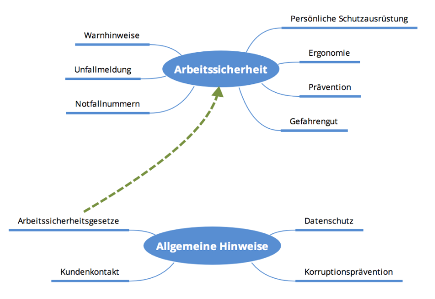
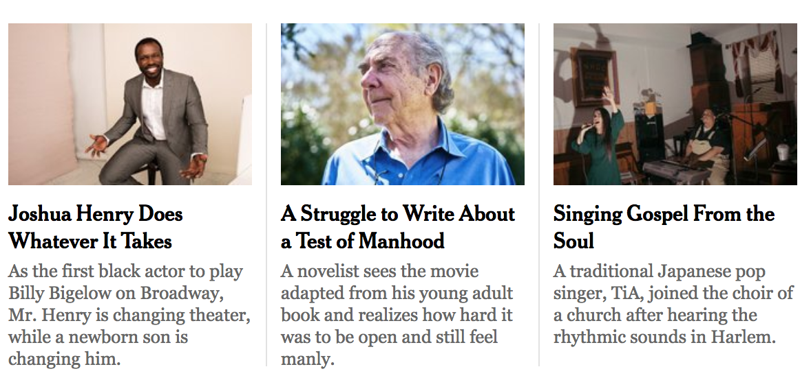
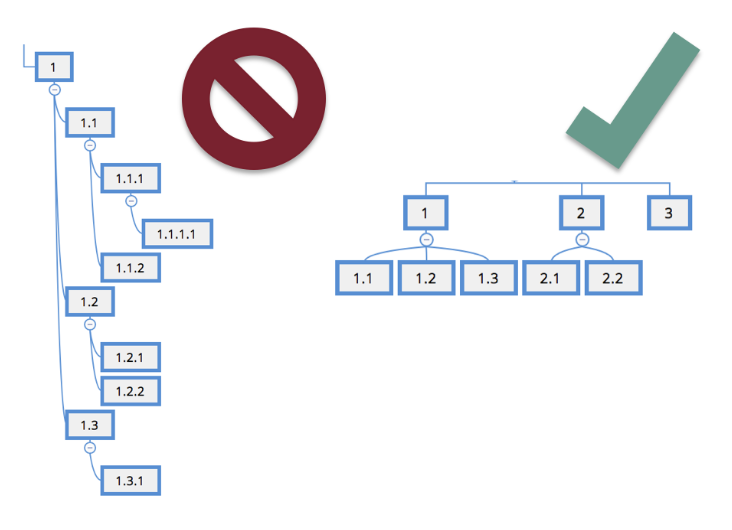
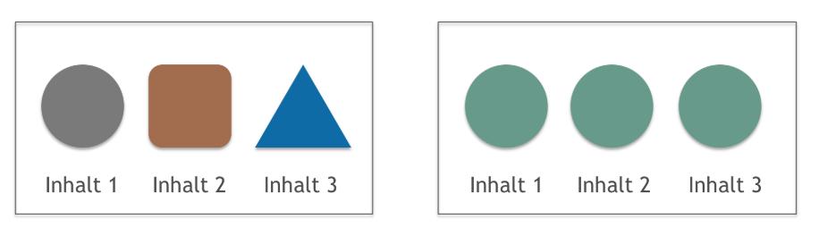
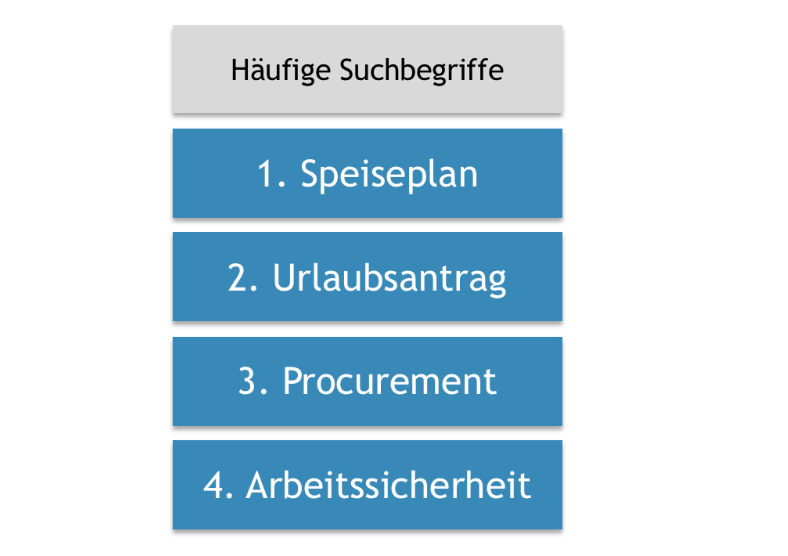

9 Wege zu guter Informationsarchitektur im Intranet
Wir leben nicht mehr im Zeitalter der Informationsarmut. Im Gegensatz, Nutzer leiden im digitalen Raum mehr und mehr an Informationsüberflutung. Eine gute Informationsarchitektur dient dem Zweck, Nutzern auf besonders navigationsarmer Weise, die genau passenden Informationen zur Verfügung zu stellen. Die hier beschriebenen Tipps sind allgemeine, aber abprüfbare Annahmen, auf die Informationsarchitekten zurückgreifen können, um Inhalte jeder Art nach ihrer Nutzungsfreundlichkeit zu untersuchen und daraus Empfehlungen für Inhaltskonzepte abzuleiten.
1. Kollokation
Gleiches zu Gleichem - Zusammenstellen von Elementen mit ähnlichen Inhalten oder zum selben Thema.
Nutzer sollten in der Lage sein, alle relevanten Inhalte eines Themas ohne großen Navigationsaufwand einfach zu finden. Verwandte Inhalte sollten in einem Bereich oder Ast gesammelt werden oder leicht zugänglich sein. Unähnliche Elemente oder Elemente zu verschiedenenen Themenbereichen sollten auch verschiedenen Bereichen zugeordnet werden können.
Bsp.: Themengruppe "Arbeitssicherheit" und Themengruppe "Allgemeine Hinweise" mit thematischen Überschneidungen
2. Vollständigkeit
Themen und Inhalte die referenziert werden sind vollständig und erreichbar.
Wenn ein verwandter Themenbereich erwähnt wird, muss sichergestellt sein, dass sich der Inhalt tatsächlich auch im Intranet befindet. Benutzer sollten nicht auf nicht-vorhandene Informationen verwiesen werden. Dies gilt insbesondere für „tote Links“ oder im Aufbau befindliche Seiten.

Bsp.: Hinweis auf Ansprechpartner mit "totem Link"
3. Aktualität
Informationen im Intranet sollten zu jeden Zeitpunkt aktuell und gültig sein.
Nutzer sollten sich nicht fragen müssen, ob eine bestimmte Information noch gültig ist oder nicht.
4. Informationsfährte
Navigationspunkte und Absprünge geben einen klaren Hinweis auf die dahinterliegenden Informationen.
Ein Nutzer sollte dazu in der Lage sein, die Informationen eines Inhaltes vor dem eigentlichen Auffrufen zu erschließen. Alle Navigationspunkte sollten so benannt sein, dass der Nutzer bereits vor dem Klick abschätzen kann, ob der Inhalt relevant ist oder nicht. Dies kann z.B. durch Auswertungen einer Treejack- oder Cardsortinganalyse untersucht werden. Absprünge von Startseiten oder besonders lange Inhalte sollten mit einem Teasertext versehen werden, der den Inhalt grob zusammenfasst und Dokumente sollten nicht kommentarlos bereitgestellt werden, sollte keine Vorschau möglich sein.
Bsp.: Durch einen aussagekräftigen Teasertext kann der Nutzer die Nachricht bereits vor einem Klick auf Relevanz prüfen
5. Navigationstiefe
Eine reduzierte Navigationstiefe sorgt für größere Nutzerzufriedenheit und bessere Auffindbarkeit.
Nutzern sollte der kurzmöglichste Weg zum Inhalt angeboten werden. Die Hauptaufgabe des Nutzers sollte das Konsumierung der Inhalte sein, nicht die Suche danach oder die Navigation dahin. Sprungseiten sind auf die obersten Navigationsebenen zu beschränken und Nutzer sollten nicht ständig mit vielen Auswahlmöglichkeiten überfordert werden. Jede weitere Sprungebene bedeutet, dass der Nutzer immer wieder erneut eine Entscheidung fällen muss, unter welchem Link sich der gewünschte Inhalt befindet. Bei mobilen Inhalten gilt: Nutzer scrollen lieber durch längere Inhalte, als zwischen einzelnen Inhaltssegmenten zu navigieren.
Bsp.: Eine Reduzierung der Sprungebenen sorgt dafür, dass Inhalte schneller Erreichbar sind.
6. Unterschiedliche Suchverhalten
Inhalte sollten so aufbereitet sein, dass sie auch bei unterschiedlichen Suchverhalten leicht auffindbar sind.
Unterschiedliche Nutzer haben unterschiedliche Herangehensweisen bei der Suche nach Informationen. So verlassen sich manche Nutzer auf die Klarheit der Navigationsstruktur, andere widerrum bemühen die allgemeine Suche und verfeinern die Ergebnisse mit Filtern und Facetten. Die unterschiedlichen Wege zur Information sollten bei der Inhaltserstellung berücksichtigt werden (Strukturierung & Verschlagwortung).

Bei der Inhaltskonzeption sollten die unterschiedlichen Suchverhalten der Nutzer berücksichtigt werden.
7. Konsistenz
Wann immer möglich, sollten Inhaltsstruktur und -aufbereitung in ähnlichen Inhaltsbereichen auch ähnlich aufgebaut sein.
Nutzer sollten den Umgang mit bestimmten Inhaltsbereichen nicht ständig neu lernen müssen. Zum Beispiel sollten Teaser, Medien, Metainformationen, weiterführende Links oder Navigationselemente, wenn möglich, immer an der selben Stelle im Layout der Inhaltsseite platziert sein, so dass der Nutzer nicht immer wieder erneut nach diesen Informationen suchen muss.
Best Practice: Konsistente Strukturierung der Inhalte bei gleichem Inhaltstyp
8. Priorisierung
Umso wichtiger der Inhalt, desto leichter sollte dieser Auffindbar sein.
Was sind die wichtigsten Anwendungsfälle der Nutzer oder wonach wird am häufigsten gesucht? Selten sind alle Inhalte im Intranet gleichrangig. Inhalte die für eine Mehrzahl der Nutzer einen großen Mehrwert darstellen, sollten entsprechend ihrer Priorität besonders leicht auffindbar sein. Auch je nach Branche könnten bestimmte Inhalte passend zur Unternehmensstrategie einen besonderen Stellenwert in der Inhaltsstruktur genießen. Ein Unternehmen der chemischen Industrie hat zum Beispiel ein großes Bedürfnis Arbeitssicherheitshinweise prominent zu platzieren, eine Agentur vielleicht eher Datenschutzthemen.
Selten sind alle Informationen für Nutzer gleichrangig. Umso wichtiger der Inhalt, desto leichter sollte der Zugang erfolgen.
9. Verständlichkeit und Barrierefreiheit
Inhalte sollten lesbar und so geschrieben sein, dass man sie auch ohne viel Vorwissen versteht.
Informationen zu finden ist nur eine Seite der Medaille, sie auch zu verstehen die andere. Eine verständliche und leichte Sprache fördert Inklusion und Barrierefreiheit. Besonders wichtige Themen sollten zuerst so aufbereitet sein, dass sie bestmöglich auch von jedem Nutzer verstanden werden können. Notwendige Ausführungen in Fachsprache können weiterhin gesondert angeboten werden. Desweiteren sollte die Inhaltsdarstellung, wenn möglich, textbasiert erfolgen. Visuelle Medien sollten da eingesetzt werden, wo sie dem Informationsgewinn zuträglich sind. Auf einen dokumentenbasierten Inhaltsstil sollte bestmöglich verzichtet werden.
About me
Information architect and UX Researcher
I specialize in making large and content-heavy websites, intranets and apps more accessable for the user. It is my passion to make every employees life a little easier by improving knowledge transfer and collaboration in the digital workspace.

I live in Berlin-Friedrichshain.
E-Mail: benjamin.voeck@gmail.com
Phone: +49 (0) 170 297 92 44